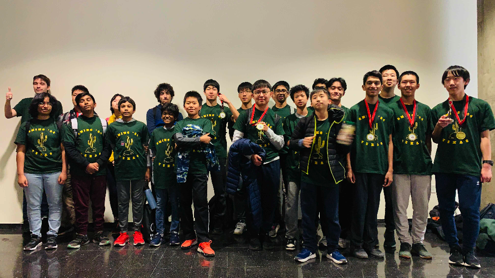

The Texas CMIMC 2024 Team
Texas Alpha
Alexander Jun (Captain)
Tarun Rapaka
Andrew Shen
Alexander Sun
Richard Wang
Leo Yu
Texas Bravo
Amogh Akella
Jiya Dani
Nathan Liu
Krithik Manoharan
Rohan Pavuluri
Eric Zang (Captain)
Texas Charlie
Enbao Cao
Aaron Fan
Xinyi Li
Eric Min
Vincent Wang
Joseph Zhang (Captain)
Texas Delta
William Chen
Edward Fu
Mahith Gottipati (Captain)
Amrit Kandasamy
Puranjay Madupu
Arjun Suresh
Coaches and organizers
Matthew Kroesche
Individual results
Alexander Sun placed 10th individually, 8th in Geometry, and 14th in Combinatorics/Computer Science.
Leo Yu placed 19th individually, 13th in Geometry, and 45th in Combinatorics/Computer Science.
Nathan Liu placed 30th individually and 17th in Algebra/Number Theory.
Tarun Rapaka placed 46th individually, 48th in Algebra/Number Theory, and 35th in Combinatorics/Computer Science.
Richard Wang placed 17th in Geometry.
Vincent Wang placed 20th in Algebra/Number Theory.
Krithik Manoharan placed 31st in Geometry.
Amogh Akella placed 37th in Combinatorics/Computer Science and 50th in Geometry.
Team results
Texas Alpha placed 1st in Sweepstakes, 4th in Team Round, and 1st in Theoretical Computer Science Round.
Texas Charlie placed 15th in Sweepstakes, 16th in Team Round, and 5th in Theoretical Computer Science Round.
Texas Bravo placed 23rd in Sweepstakes, 23rd in Team Round, and 40th in Theoretical Computer Science Round.
Texas Delta placed 43rd in Sweepstakes, 32nd in Team Round, and 50th in Theoretical Computer Science Round.
Team photo

(Back to Main Page)